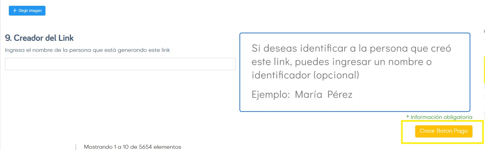
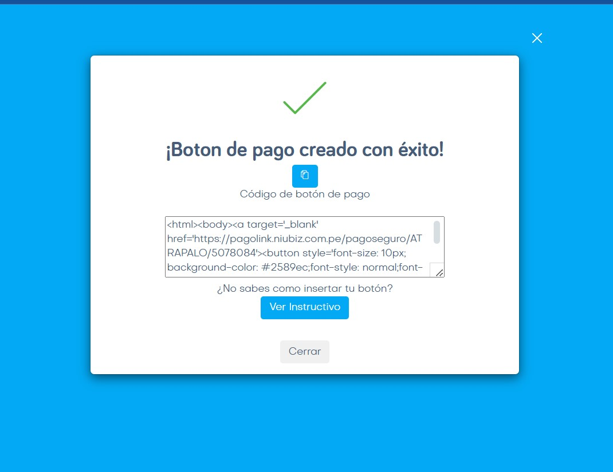
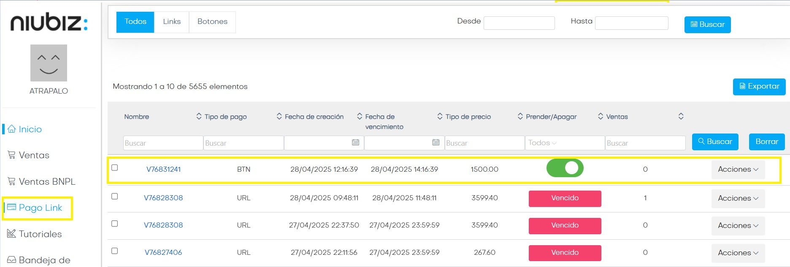
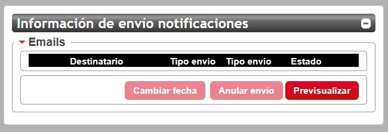

Atrapalo Perú
(Iata propio)
Procesos de Emisión Manual
En este dominio, al tener IATA propio, Si el pago pasa correctamente la reserva se emitirá automaticamente.
Admin de ejemplo: V76771235
Si por algun motivo el pago es rechazado, el pedido ingresará con el Tag Emision Fallida.
En la mayoria de los casos, la falla esta en el cobro de los tickets. Por ende solemos tener los gastos de gestión y servicios pagos en la caja del admin.
También podemos tener un rechazo del pago de nuestros servicios, por ende la caja vendria con ese fee faltante a
cobrar
Si este es el caso, procederemos con la emision manual
La primer instancia va a ser el cobro por GDS
Debido a que este dominio tiene IATA propio el comando de emisión es solo TKP
No hace falta el CVV de la tc. Simplemente tirando el comando TKP lo cobra y lo emite
Si el pago por gds da Rechazado lo primero que debemos hacer es cargar el TAG BANKIA y dar aviso al pax del error de pago.
El contacto puede ser telefonico o bien por correo. Lo importante es que el pax sepa que hubo un rechazo y no se pude avanzar.
Teniendo en cuenta que para ser más rentables debemos evitar el cobro desde nuestro carrito, vamos a pasar a la segunda instancia:
Informe de TCR con sugerencia de autorización con banco, alternativas de medios de pago activos y plazo de vencimiento
**Plantilla de FD : NOTIFICACIÓN IMPORTANTE I PAGO RECHAZADO VXXXXX I Atrápalo**
Recuerden dejar comentarios en admin sobre toda accion tomada
De acuerdo a lo que informe el pax, procederemos a cobrar nuevamente o bien cancelamos el pedido.
El siguiente escenario es cuando el pax decide pagar con otro medio de pago.
Esta tercer instancia es el
envio de link de pago por nuestro carrito
.
Creación de link desde admin
Para poder tener el botón de link de pago, la caja de cobros tiene que mostrar un importe a cobrar.
Debido a que ya agotamos la primera opción de cobro (gds), vamos a cambiar la forma de pago para cobrar todo el importe por nuestro comercio.
La opción de que se debe usar siempre es Enviar link de pago total
Esta alternativa es la correcta ya que brinda las mismas opciones de pago que al comienzo de la compra.
Informaremos nuevamente al pax por medio de un FD el envio del link.
Si el pax paga el importe, la caja del admin reflejara el cobro y procederemos a emitir el ticket CASH.
Si el cobro vuelve a dar denegado, pasaremos a la cuarta instancia: envio de link de pago Niubiz
Para ver el paso a paso para la creacion del link dar Click.
Si el pago finalmente se concreta, avanzaremos cuadrando la caja de admin con la opción Link de pago externo
Procederemos a emitir CASH el ticket
IMPORTANTE: Recuerden eliminar la forma de pago inicial que venia cargada en el pnr.
Si no lo quitamos, la plataforma va a
generar cobro innecesario al usuario
El comando es F.@ + R.CG / ER.
Cargamos FOP CASH -> TMU1FS.
Plataforma de cobros Niubiz
La plataforma de pagos que usamos en Perú es Niubiz
***Para cobros con tarjeta Amex, la caja lo configura como Alignet***
Chequeo de cobros web
Todos los cobros generados desde nuestro carrito de compras, podemos verificarlo en la plataforma con el usuario correspondiente:
Usuario:administracion@atrapalo.pe
Contraseña: Admin_Abr25*
Los cobros ingresados en la caja de pagos del admin estan vinculados a nuestra cuenta directamente.
Para poder chequear el pago, debemos ingresar a Niubiz y seleccionar dicha cuenta.
La busqueda se realiza con el numero de pedido desde el menu de Ventas.

Al darle click en el boton Ver, nos aparece el detalle del pago.
Creación de link de pago Niubiz
Debemos ingresar a la plataforma Niubiz
El usuario que debemos usar es:
Usuario: gomez.carolina@atrapalo.com.ar
Contraseña: Ope.2025!
Lo primero que debemos hacer es seleccionar el Comercio correcto, ya que tenemos acceso para crear links en usd y en soles
En el menu lateral encontraremos la opción Pago Link
Seleccionamos el botón "Crear link de pago"
Debemos completar todos los campos del link
Nombre del botón: LOCALIZADOR ATRAP
Importe y Vigencia: IMPORTE RVA Y 2/3 HS DE DURACIÓN
Tipo y Datos: TIPO UNICA (un solo uso) Y LOCALIZADOR ATRAP (solo los nros)
Creación de Botón: DAMOS CLIK PARA CREARLO

Una vez creado el botón, nos deriva a la siguiente pantalla.
Solo cerraremos la ventana para ir al listado de los links creados

Daremos click en el menú Pago Link para que nos muestre el detalle de los botones creados. Entre ellos el que se acaba de generar

Al ingresar en el submenu del botón podremos acceder a la opción para compartirselo al pax
Nos deriva a una nueva ventana para poder copiar el link
Enviaremos el link de pago creado por una plantilla de FD
Si un pax concreta el pago a traves de este link, en el listado figurará como VENTA
Reservas Sin Localizador - Casos BBVA
Entre las opciones de tarjeta figuran la Visa BBVA y Master BBVA
Es en esta alternativa que les van a solicitar el codigo desde la app de BBVA.
Si ellos no completan la transaccion, por no colocar el codigo correcto, por no tener habilitadas las compras online, por vencerse el tiempo.
En admin, van a entrar como Sin Localizador para que intentemos retomarla y cerrar la venta.
Estos pedidos no envian ninguna confirmación al pax, por lo cual lo ideal es contactar al cliente lo más rápido posible ya que no saben siquiera del intento de compra generado.
